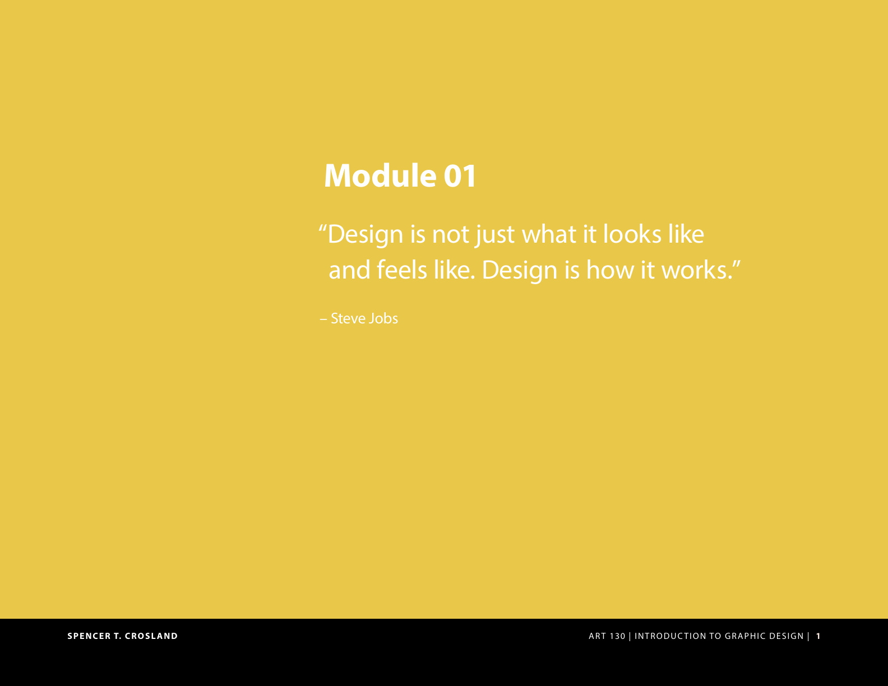
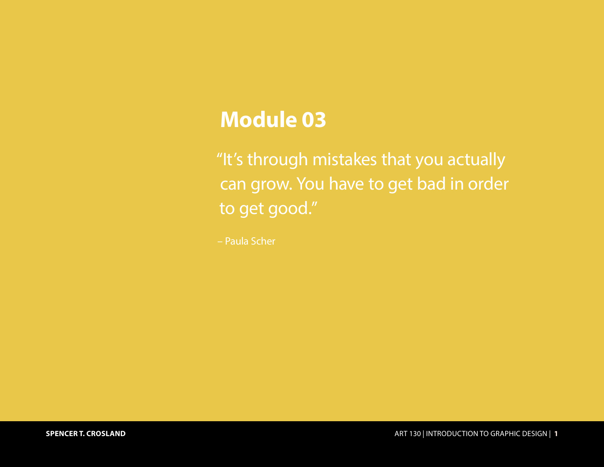

Week 1: Principles of Design
First, the student will learn or review the principles of design. Then they will find one professional design of each of the six principles of design. The student will find professional examples online that illustrate the principles of design. Then the student will collect them within the provided W01 Process Book templateDownload W01 Process Book template.

Week 2: Album Project Kickoff
The student will be creating an album cover for a single instrumental song of their choice as long as it was created before 1950. First, they will learn about the project and begin sketching our album covers. Following the videos on the W02 Assignment: Process Book page the student will create sketches will go into the process book with everything else done this week. The activity this week requires the student to create three compositions communicating three different feelings. It is unrelated to the Album Cover or the sketches. The activity will also go into the Process Book. The student will also start picking color this week for our album cover. Using Adobe Color resourcesLinks to an external site or CoolersLinks to an external site to find four color palettes that match the chosen song.

Week 3: Album Project Refinement
After refining the six best sketches the student will do four variation sketches for each of your six sketches, a total of 24 sketches. Follow the videos on the W03 Assignment: Process Book page. The sketches (and everything else done this week) will go into the process book. The student will be improving their favorite color palette from last week. The student will also be experimenting with type for your chosen album song. The student will need to know the song title, performer, and year it was performed. Finally, the student will be making our best three refined designs in Illustrator in color! They will also make alternative versions of these designs.

Week 4: Album Project Completeion
The student will take their best piece of type from last week's Type Auditions and make a copy of it on Page 02 and improve the copy so that it is better. After feedback from their professor and peers, the student will be refining their best three Illustrator compositions from last week. Then they will add type from Step 02. Around midweek, the student will focus all their efforts on one album. The activity this week will help the student to prep a file for print. The student will be printing out the final project at their local print shop and they will prep and print it the same way. The student will choose their favorite composition and spend the most amount of time on this composition. On the left, the student will place their final composition without crop marks.